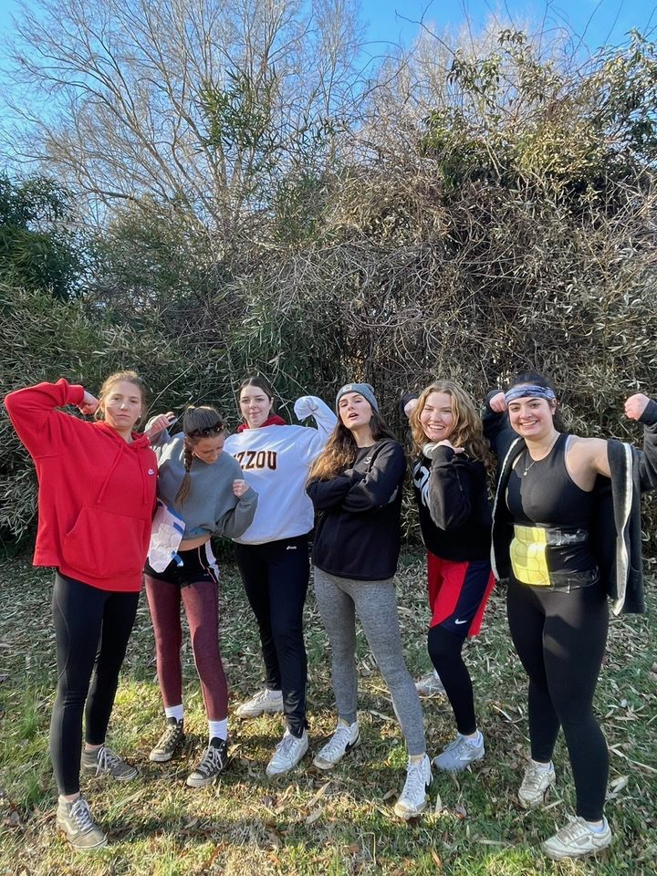

Continued
Introduction
I am a current sophomore at Elon University studying Elon University studying Sports Management and minoring in communications. I want to pursue a career field either in sports Marketing or sports operations.
Personal Life
As of my sophomore year, I participate in a few notable organizations. I began playing club rugby in the fall of sophomore year. I was really passionate about learning how to play this sport, and all the challenges that came with it. I made a new group of friends, which is something that is really important to me. I am also a member of Alpha Omicron Pi Sorority. Being a part of this organization has ked meet new people and attend important philantrhopical events. I am involved in WINS (Women Influnecers in Sport). As someone who is passionate about women having equal representation in sport, I find this club extrememely important to be involved in.